Outline
- String Matching Introduction
- Naive (Brute Force) String Matching
- Matching with Finite State Automata
- Knuth-Morris-Pratt Algorithm
- FYI: Rabin-Karp Algorithm
String Matching Introduction
The string matching problem is the problem of finding all occurrences of a string P (the pattern) in a target text T, also a string.
We treat both T and P as arrays T[1 .. n] and P[1 .. m], where m ≤ n. The elements of the arrays are members of a finite alphabet Σ.
More precisely, we say that P occurs with shift s in T (P occurs beginning at position s + 1 in T) if
0 ≤ s ≤ n − m (one cannot fall off the end of T), and
T[s + 1 .. s + m] = P[1 .. m].
The string matching problem is the problem of finding all valid shifts.
A simple example:
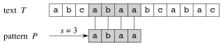
Applications
String matching is obviously important for implementing search in text editing programs, and for document search, whether searching within a single document or searching multiple documents for a topic of interest. This latter application extends to internet search engines. Other specialized applications include processing DNA sequences in bioinformatics.
Brief History
In 1970 Cook proved that an O(M+N) machine is possible. His theorem was not intended to be practical, but Knuth and Pratt followed the structure of the theorem to design an algorithm. Around the same time, Morris derived the algorithm independently as part of his design of a text editor. Eventually they found out about each other’s work and published it in 1976. Also in 1976, Boyer and Moore found another efficient algorithm not covered here: see the Sedgewick book. In 1980 Rabin & Karp came up with a modification to brute force that searches on chunks of text of size M using a hash function. Researchers continue to come up with new algorithms.
Algorithms
There are a surprising number of variations on string searching algorithms. See http://www-igm.univ-mlv.fr/~lecroq/string/index.html for summary descriptions, code and animations in Java. Find out what a “Backward Nondeterministic Dawg Matching algorithm” is!
Most algorithms require preprocessing of the pattern before entering the matching phase. Analysis must consider both costs, and applications must determine whether the preprocessing is worth the speedup in matching.
The algorithms we cover are summarized by this table from the text:
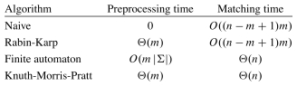 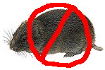
Today we will cover how these algorithms work, but not any proofs of correctness, which you may find in the text.
Notation and Terminology
Prefix: p ⊏ t (p is a prefix of t) if t = pw for some w ∈ Σ*
Suffix: s ⊐ t (s is a suffix of t) if t = ws for some w ∈ Σ*
The empty string is denoted ε.
The k-character prefix T[1 .. k] of any text or pattern T is denoted Tk.
Comment on String Matching Time: The test of whether “x == y” takes Θ(t + 1) time, where t is the length of the longest string z such that z ⊏ x and z ⊏ y. (The “1” is included to cover the case where t = 0, since a positive amount of time must be expended to determine this fact.) This comparison loop will be implicit in some of our pseudocode.
Naive (Brute Force) String Matching
It is often instructive to start with a brute force algorithm, that we can then examine for possible improvements and also use as a baseline for comparison.
The obvious approach is to start at the first character of T, T[1], and then step through T and P together, checking to see whether the characters match.
Once P has been match at any given shift T[s], then go on to checking at T[s+1] (since we are looking for all matches), up until s = |T| − |P| (which is n − m).
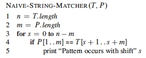
Example
Suppose P = aab and T = acaabc. There are four passes:
 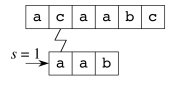
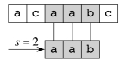
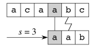
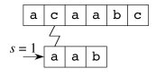
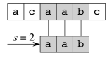
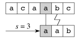
You an see C code and a Java applet animation at http://www-igm.univ- mlv.fr/~lecroq/string/node3.html
Analysis
No preprocessing is required.
For each of n − m + 1 start positions, potentially m pattern characters are compared to the target text in the matching phase. Thus, the naive algorithm is O((n - m + 1)m) in the worst case.
Inefficiencies
The brute force method does not use information about what has been matched, and does not use information about recurrences within the pattern itself. Consideration of these factors leads to improvements.
For example, when we matched P = aab at s = 2, we found that T[5] =
b:
Then it is not possible for a shift of s = 3 (or s = 4 if T were longer)
to be valid, beause these shifts juxtapose P[2] = a (and P[1] = a if
applicable) against T[5] = b:
This information is used in the finite state automata and Knuth-Morris-Pratt approaches.
Matching with Finite State Automata
Finite state automata are machines that have a finite number of states, and move between states as they read input one symbol at a time.
Algorithms that construct (or simulate) finite state automata can be very efficient matchers, but they require some preprocessing to construct.
Finite State Automata
Finite state automata are widely used in computability theory as well as in practical algorithms. It’s worth knowing about them even if you are not doing string matching.
A finite state automaton (FSA) ** or **finite automaton M is a 5-tuple (Q, q0, A, Σ, δ) where
-
Q is a finite set of states
-
q0 ∈ Q is the start state
-
A ⊆ Q is a set of accepting states
-
Σ is a finite input alphabet
-
δ : Q x Σ -> Q is the transition function of M.
The FSA starts in state q0. As each character (symbol) of the input string is read, it uses δ to determine what state to transition into. Whenever M is in a state of A, the input read so far is accepted.
Here is a simple example: q0 = 0 and A = {1}. (What are Q, Σ, and δ?)
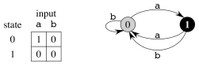
What strings does this FSA accept?
We define the final state function φ : Σ* -> Q such that φ(w) is the final state M ends up in after reading w:
φ(ε) = q_0
φ(_wa) = δ(φ(w), a) for w ∈ Σ*, a ∈ Σ
String Matching Automata
Let’s see how they work by an example. This is the string matching automaton
for P = ababaca:
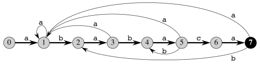 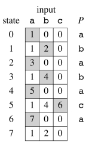
The start state is 0 and the only accepting state is 7. Any transitions not
shown (e.g., if c is read while in states 1, 2, 3, 4, 6, and 7) are assumed
to go back to state 0.
This automaton can be represented with the table to the right. The shading shows the sequence of states through which a successful match transitions. These transitions correspond to the darkened arrows in the diagram.
We can run this automaton continuously on a text T, and if and when state 7 is entered output the relevant positions: the match will start with shift i − m or at position i − m + 1.
The following code simulates any FSA on input text T, given the FSA’s table δ and pattern length m:
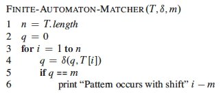
For example, below is a run on T = abababacaba, which includes P =
ababaca starting at position 3: ab ababaca ba.
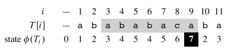
State 7 is reached at i = 9, so the pattern occurs starting at i − m + 1, or 9 − 7 + 1 = 3. The FSA keeps going after a match, as it may find other occurrences of the pattern.
Unlike the brute force approach, past work is not thrown away: the transitions following either failure to match a character or success to match the entire pattern pick up with the input read so far.
For example,
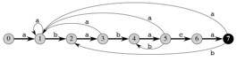
-
After Failure: At i = 5,
ababahas been matched in T[1 .. 5] andcwas expected but not found at T[6]. Rather than starting over, the FSA transitions to state δ(5,b) = 4 to indicate that the pattern prefix P_4 =ababhas matched the present text suffix _T[3 .. 6]. -
After Success: At, i = 9, we are in state 7 (success), and a
bis seen. We need not start over: the FSA transitions to state δ(7,b) = 2 to reflect the fact that there is already a match to the prefix P_2 =abat _T[9 .. 11].
This makes FSAs much more efficient than brute force in the matching phase. In fact, matching is Θ(n). But how do we build them?
Constructing Finite State Automata (Preprocessing Phase)
In general, the FSA is constructed so that the state number tells us how much of a prefix of P has been matched.
-
If the pattern P is of length m and the FSA is in state m, then the pattern has been matched.
-
If the state number is smaller than m, then the state number is the length of the prefix of P matched.
Another definition is needed to formalize this.
Definitions and Strategy
The suffix function corresponding to P of length m is σ_P_ : Σ* -> {0, 1, … m} such that σ_P_ (w) is the length of the longest prefix of P that is also a suffix of x:
σ_P(_w) = max {k : Pk ⊐ w}.
For example, if P = ab then
- σ(ε) = 0
- σ(
ccaca) = 1 - σ(
ccab) = 2
(For simplicity, we leave out the subscript P when it is clear from the context.) Then we can define the automaton for pattern P[1 .. m] as:
-
Q = {0, 1 .. m}
-
q0 = 0
-
A = {m}
-
Σ is a superset of the characters in P
-
δ(q, a) = σ(Pq __a) for any state q and character a. (Pq __a is the concatenation of the first q characters of P with the character a.)
By defining δ(q, a) = σ(Pq __a), the state of the FSA keeps track of the longest prefix of the pattern P that has matched the input text T so far.
In order for a substring of T ending at T[i] to match some prefix Pj, then this prefix Pj must be a suffix of T[i].
We design δ such that the state q = φ(T[i]) gives the length of the longest prefix of P that matches a suffix of T. We have:
q = φ(Ti) = σ(Ti), and Pq ⊐ Ti (Pq is a suffix of Ti).
Given a match so far to Pq (which may be ε) and reading character a, there are two kinds of transitions:
-
When a = P[q + 1], a continues to match the pattern, so δ(q, a) = q + 1 (going along the dark “spine” arrows of the example).
-
When a ≠ P[q + 1], a fails to match the pattern. The preprocessing algorithm given below matches the pattern against itself to identify the longest smaller prefix of P that is still matched.
An example of this second case was already noted above for δ(5, b) = 4.
Preprocessing Procedure
The following procedure computes the transition function δ from a pattern P[1 .. m].
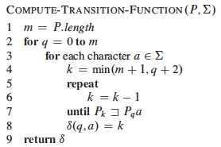
The nested loops process all combinations of states q and characters a needed for the cells of the table representing δ.
Lines 4-8 set δ(q, a) to the largest k such that Pk ⊐ Pqa.
- The preprocessor is matching P against itself.
- Thus, knowledge of the structure of P is used to retain information about the match so far, even when matches fail.
- By starting at the largest possible value of k (line 4) and working down (lines 5-7) we guarantee that we get the longest prefix of P that has been matched so far.
- If the match succeeds at k = q + 1 then this transition indicates a successful match for the current q and a.
- The loop is guaranteed to end at k = 0, because P0 = ε is a suffix of any string.
Analysis
Compute-Transition-Function requires m* |
Σ | for the nested outer loops. |
Within these loops, the inner repeat runs at most m + 1 times; and the
test on line 7 can require comparing up to m characters. Together lines 5-7
contribute O(_m_2).
Therefore, Compute-Transition-Function is **O(m_3 |Σ|)**. This is rather
expensive preprocessing, but the Θ(_n) matching is the best that can be
expected.
You an see C code and a Java applet animation at http://www-igm.univ- mlv.fr/~lecroq/string/nod43.html
Knuth-Morris-Pratt Algorithm
The Knuth-Morris-Pratt algorithm improves on the FSA algorithm by avoiding computation of δ.
Instead it precomputes an auxiliary **prefix function π_P**, represented as an array π_P[1 .. m], that can be computed from a pattern P of length m in Θ(m) time. (We’ll leave off the P subscript from now on.)
π[q] is the length of the longest prefix of P that is a proper suffix of Pq. This information enables fast amortized computation of δ(q, a) on the fly.
The KMP matcher operates like the FSA matcher, but using π instead of δ. There is some additional overhead at matching time, but asymptotic performance of matching remains Θ(n).
How π Works
Given P[1 .. m], the prefix function π for P is π : {1, 2 …, m} -> {0, 1, …, m-1} such that
π[q] = max{k : k < q and Pk ⊐ Pq}
For example, for P = ababaca, π is as follows (let’s use the formula
above to explain a few of the entries below, particularly for i=5.):
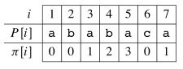
The table is structured such that a failure at a given position will drive the system to hop to the next smaller prefix that could be matched. (Here I am skipping over the textbook’s discussion of π* and Lemma 32.5, and using examples instead).
For example, for P = ababaca, if q = 5 and we are reading the 6th
character (to the right of the line), consider what happens when that
character is c, b or a:
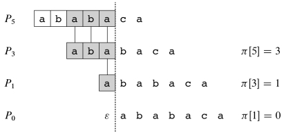
From P[6] we see that a c is expected next.
- If a
cis read, we go to state 6 and continue. - If an
aorbis read, then there is a mismatch and we need to figure out what prefix of P has still been matched. We look up π[5], which says to skip back to state 3. - Repeating the test at state 3, the next character expected is P[4] =
b. If we see abwe continue to state 4. - Otherwise (the next character is
a), we look up π[3] and skip back to state 1. Again, the next character does not match what is expected for state 1, and π[1] tells us to start over at state 0. In state 0, anais expected, so it goes to state 1.
Thus, π helps us retain information from prior comparisions, shifting back to the state for the maximum prefix matched so far, rather than starting over.
The KMP Matcher
Both the KMP matcher and the algorithm for computing π are similar to the
FSA’s Compute-Transition-Function (take the time to compare them when you
read the text).
The KMP matching code is below. We can see the “skipping” discussed above happening in lines 6-7, with successful matching of the next character handled in lines 8-9. After a successful match, we jump to the appropriate state to continue looking for the next item in line 12.
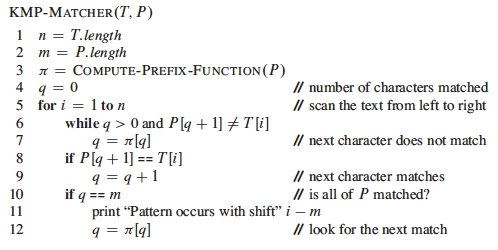
Computing π
The code for computing π is very similar to that of KMP-Matcher, because the
constructor is matching P against itself:
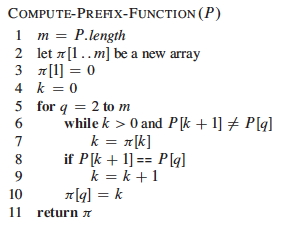
You an see C code and a Java applet animation at http://www-igm.univ- mlv.fr/~lecroq/string/node8.html
Analysis and Correctness
The text presents an analysis showing that Compute-Prefix-Function is
Θ(m) -- a considerable improvement over the FSA’s O(_m_3 |Σ|) – and
KMP-Matcher is Θ(n).
These are good results, but in practice the FSA approach is still used when a
pattern will be used many times repeatedly, because of the greater simplicity
of the Finite-Automaton-Matcher code.
The proof of correctness is accomplished by showing how KMP-Matcher simulates the FSA matcher’s operation. It’s worth reading the informal discussion pages 1009-1010, even if you don’t wade into the formal proof.
Rabin-Karp Algorithm
There is an entirely different approach that functions in some respects like the brute force approach, but instead of testing character by character it tests on whole substrings of length m by using a hash function. If the hash function matches, it then uses brute force checking to verify the match.
Comparing Strings as Radix-d Numbers
Given |Σ| = d, Rabin-Karp algorithm treats each string in Σ* as if it were a number in radix d notation.
-
For example, if Σ = {0, 1, 2, 3, 4, 5, 6, 7, 8, 9} then d = 10, and we interpret the string “274” to have value 2⋅d2 + 7⋅d1 + 4⋅d0 = 2⋅100 + 7⋅10 + 4⋅1.
-
Similarly, if Σ = {a, b} then d = 2, and we map the characters of {a, b} to decimal values {0, 1}. Then “bab” = 1⋅d2 + 0⋅d1 +1⋅d0 = 1⋅4 + 0⋅2 +1⋅1. (This is of course a binary representation of the decimal number 5.)
-
Hexadecimal notation uses Σ = {0, 1, 2, 3, 4, 5, 6, 7, 8, 9, A, B, C, D, E, F} and d = 16.
| This idea can be extended to large but finite | Σ | . |
Thus, we can treat P[1 .. m] and substrings T[s+1 .. s+m] (0 ≤ s ≤ n − m) as m digit numbers in radix-|Σ|.
Our running example will assume Σ = {0, 1, 2, 3, 4, 5, 6, 7, 8, 9} and d = 10.
If we can compare these numbers directly to each other, we can quickly determine whether P[1 .. m] matches T[s+1 .. s+m].
Two modifications need to be made to make this method suitable for a string matching algorithm: shifting and hashing.
Shifting
If a match to T[s+1 .. s+m] fails, we need to compute the next number for T[s+2 .. s+m+1].
Rather than recomputing the entire sum, this can be done efficiently by a mathematical “shift”:
- Subtract the value of the highest order digit a⋅d__m-1.
- Multiply the remaining value by d to shift the values of the digits up by one position.
- Add the value of the new character T[s + m + 1].
An example is shown below, shifting a 5-digit number. (The mod will be explained below.)
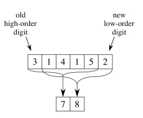 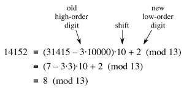
Hashing
These numbers can get very large. Even on a machine that allows arbitrarily large numbers, this is still a problem: we can no longer assume that comparing two numbers takes constant time.
The solution is to compute the numbers modulo the largest prime number q such that dq still fits in one computer word (which can be manipulated with one machine level instruction).
Now you see why it is called “hashing:” it is like the division method of hashing.
For example, suppose we are matching to a 5 digit pattern P = 31415 in radix d = 10 we choose q = 13, and we are comparing to string 14142. The hash code for the pattern is 7, and for the target is 8, as shown in the previous example. The hashes do not match, so the two patterns cannot be the same.
However, the converse is not necessarily true. Hashing introduces a secondary problem: collisions. Two different numbers may hash to the same value, as shown in the example below.
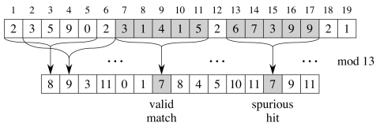
To solve this problem, when the hashes of P[1 .. m] and T[s+1 .. s+m] are equal, the Rabin-Karp algorithm verifies the match with a brute force comparison.
This is still saving on comparisons over the brute force method, as we do not compare characters for failed hash matches: the strings cannot be the same.
The Rabin-Karp Algorithm
Here is the pseudocode:
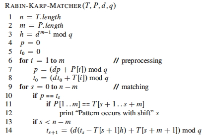
(The subscripts on t are just for exposition and can be ignored.)
- Line 3 initializes h to the value of the highest order digit that will be subtracted when shifting.
- Lines 4-8 compute the hash code p for P and the initial hash code t for the substring of T to be compared in each iteration (t will be updated by shifting digits as discussed).
- Like the brute-force algorithm, lines 9-14 iterate over all possible shifts s, but instead of comparing character by character, at first the hash codes are compared. If they match, brute force comparison is done.
You an see C code and a Java applet animation at http://www-igm.univ-mlv.fr/~lecroq/string/node5.html
Anaysis
Preprocessing is Θ(m): the loop 6-8 executes m times and with the modular arithmetic keeping the numbers within the size of one computer word the numerical work in the loop is O(1).
The worst case matching time is still Θ((n − m + 1)m), like brute force, because it is possible that every hash code matches and therefore every brute force comparison has to be done.
But this is highly unlikely in any realistic application (where we are searching for somewhat rare patterns in large texts). For constant number of valid shifts the text offers an argument that the expected time is O(n + m), or O(n) since m ≤ n.
Extensions
A major advantage of Rabin-Karp is that it has natural extensions to other pattern matching problems, such as two-dimensional pattern matching (finding an m x m pattern in an array of n x n characters), or searching for multiple patterns at once. Therefore it remains an important pattern matching algorithm.
Dan Suthers Last modified: Mon Jan 13 19:12:09 HST 2014
Images are from the instructor’s material for Cormen et al. Introduction to
Algorithms, Third Edition.